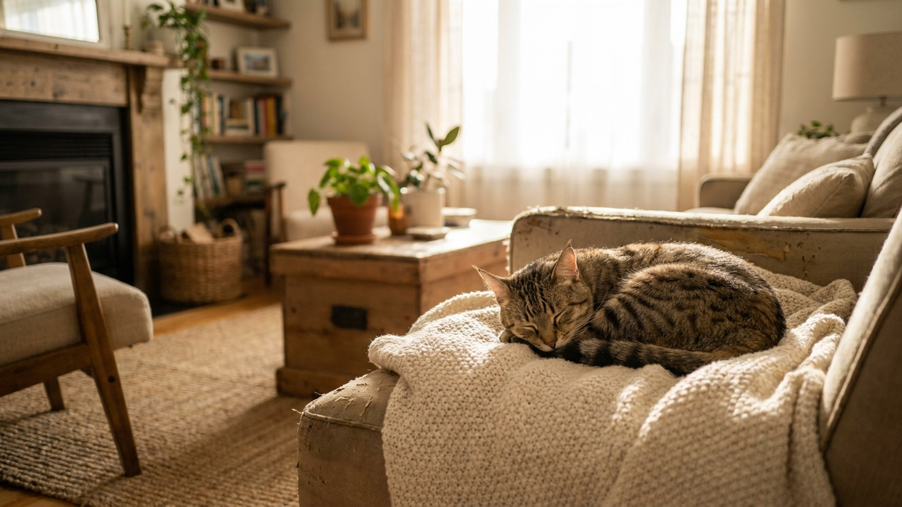

Первый раз увидев пиксибоба, люди нередко думают: это дикий кот. Пятнистый окрас, крупное тело, короткий хвост, кисточки на ушах — силуэт бобкэта из американских лесов. Но пиксибоб, выращенный дома, — одна из самых «собачьих» кошек в мире: идёт рядом без поводка, приносит мячик и скучает без хозяина сильнее, чем многие псы. Разбираем, откуда взялась порода и что с ней делать дома.
🐾 Не уверены, что это опасно?
Опишите симптом в AnimaLife — AI-ветеринар за минуту подскажет, что в пределах нормы, а когда пора к врачу.
История породы начинается в 1985 году в штате Вашингтон: заводчица Кэрол Энн Брюер подобрала необычного котёнка с коротким хвостом. Судьба этой линии легла в основу породы, которую TICA официально признала в 1994 году. Версия о гибриде с диким бобкэтом красива, но генетически не подтверждена — пиксибоб полностью домашняя кошка.
Пиксибоб — порода с плотной привязанностью к конкретным людям. Кот выбирает «своего» хозяина и следует за ним по квартире, участвует в любом деле: проверяет содержимое сумок, сопровождает в ванную, укладывается рядом на диване.
Интеллект у породы высокий: пиксибоб поддаётся кликер-обучению, запоминает своё имя и несколько команд.
Пиксибобы бывают короткошёрстными и длинношёрстными. Короткошёрстный вариант требует расчёсывания раз в неделю. Длинношёрстный — 2–3 раза, особенно в период линьки весной и осенью.
Из-за крупного размера важно следить за весом: пиксибоб при малоподвижном образе жизни склонен к набору. Рацион и контрольный вес стоит обсудить с ветеринаром при плановом осмотре.
Порода идеальна для семей, которые хотят кошку с «собачьим» темпераментом — преданную, обучаемую, контактную. Пиксибоб хорошо живёт с детьми и другими животными, не требует особого ухода за шерстью и не изматывает хозяина голосом. Единственное условие: ему нужен живой контакт с людьми каждый день. Порода не для тех, кто ищет самостоятельного кота «само по себе».
🐾 Питомец ведёт себя странно?
AnimaLife расшифрует поведение кошки и собаки и подскажет, что делать. Попробуйте бесплатно прямо в мессенджере.
🐾 Понравился разбор?
Подпишитесь на канал — каждый день разбираем по одному тревожному симптому у кошек и собак: что в пределах нормы, а когда пора к врачу. Подпишитесь, чтобы не пропустить разбор, который может спасти здоровье вашего питомца.
Материал носит информационный характер и не заменяет очную консультацию ветеринара.